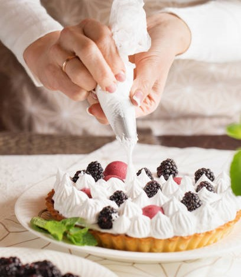

História
Conheça a história de superação de Maria Leoni, mãe solteira, fundadora da maior rede de padarias da itália!!!
Maria Rossi: A Doce Jornada da Padeira Solitária
Maria Leoni era uma mulher forte e resiliente. Após um divórcio doloroso, ela se viu criando três filhos pequenos sozinha. As noites eram longas, e as contas se acumulavam. Mas Maria tinha um sonho: abrir sua própria padaria. Com coragem e determinação, Maria começou sua jornada. Ela estudou receitas antigas, aprendeu os segredos da massa perfeita e mergulhou na tradição italiana. Sua cozinha se transformou em um laboratório de amor e farinha. Ela amassava a massa com as mãos calejadas, imaginando o aroma do pão fresco que em breve encheria sua padaria.
